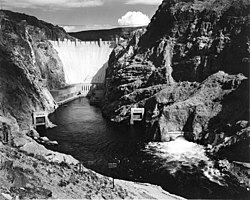

The Great Depression
The most direct cultural driver behind 20th-century hydropower expansion was the Great Depression. When the economy collapsed in 1929, the federal government needed to do something visible and large-scale to put people back to work and restore public confidence. Hydroelectric dam construction fit that need perfectly.
During the 1920s, the Tennessee River valley was one of the most impoverished regions in the United States, largely bypassed by the industrial growth of the early 20th century and home to millions of poor subsistence farmers with little opportunity to improve their lives. The TVA and projects like it were partly a response to that. They weren't just dams - they were a statement that these communities mattered. The TVA suggested that with the right tools, expertise, and political will, America could overcome its most stubborn challenges, and this shift in perspective was not just economic but cultural and psychological - people began to expect more from their government, seeing it as a partner in progress rather than a distant authority.

The Urban-Rural Divide
One of the most important cultural elements driving hydropower expansion was the stark inequality between urban and rural America. In 1935, ninety percent of rural homes in the United States didn't have electricity. Meanwhile, city residents had electric lights, refrigerators, and radios. Private utility companies had no interest in running power lines to rural areas where profits would be low. The disincentives to investment in electrical infrastructure left rural America increasingly distant from the rising standard of living in urban settings, and productivity growth in agriculture lagged behind other sectors as a result.
That gap gave hydropower a moral justification beyond just energy production. And when electricity finally reached those communities, the impact was immediate. Affordable electricity connected rural families to the wider world - farmers could run electric pumps, households began using refrigerators and washing machines, and the radio became a bridge to news, music, and educational programs from across the country.
World War II
If the Depression created the political will to build these dams, World War II turned them into a matter of national survival. Electric power from Grand Coulee Dam accounted for as much as one-third of the aluminum used in aircraft during World War II, and also powered the reactors at the top-secret Hanford Site, which figured prominently in the production of plutonium for the atomic bomb.
President Harry Truman later said, "Without Grand Coulee and Bonneville dams it would have been almost impossible to win this war." That kind of statement reflects how deeply hydropower had become tied to American identity - not just as an energy source, but as a symbol of what the country could accomplish when it committed to something.
The "Big Dam" Mentality
There was also a broader cultural attitude at work - a belief that nature could and should be controlled by human engineering, and that doing so was a sign of national strength. More than any other dam, Grand Coulee symbolized humanity's attempt to subordinate nature - often called the "eighth wonder of the world," it drew huge crowds of tourists, and Woody Guthrie even wrote a folk song about it. These weren't just infrastructure projects. They were symbols of American progress.
Mid-century Americans believed large dams were so successful that hydropower formed a basis for the country's postwar foreign policy of economic development. The United States was actively exporting the model to other countries as a template for modernization - that's how culturally dominant this idea had become.
The Other Side of the Story
The cultural story of hydropower isn't entirely positive. The traditional salmon rivers that had supported Indigenous peoples for centuries were cut off by dams, sacred fishing spots disappeared underwater, and communities lost cultural ecosystems and ancestral ways of life in exchange for irrigation and power. The people who built their lives around those rivers weren't consulted - they were displaced. Recognizing that doesn't erase the engineering achievement, but it gives a more honest picture of what actually happened.
Summary
The success of 20th-century hydropower was driven by Depression-era desperation, rural inequality, the demands of a world war, and a national belief in progress through technology. Those forces created the political will, the funding, and the public support that made these projects possible. The engineering was impressive - but the culture is what put it in motion.